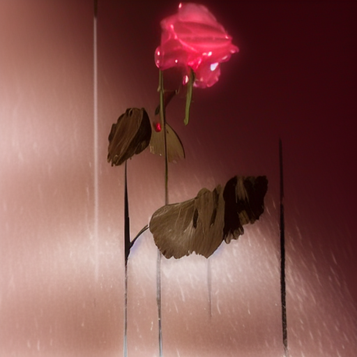
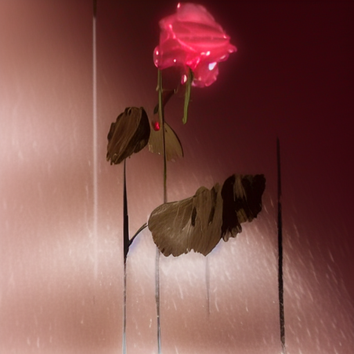

1. Model Architecture
In this work, we introduce SonicDiffusion,
an approach that steers the process of image generation and editing using auditory inputs. As
depicted in the figures below, our proposed approach has two principal components. The first
module, termed the Audio Projector, is designed to transform features extracted from an audio
clip into a series of inner space tokens. These tokens are subsequently integrated into the
image generation model through newly incorporated audio-image cross-attention layers. Crucially,
we maintain the original configuration of the image generation model by freezing its existing
layer weights. This positions the added cross-attention layers as adapters, serving as a
parameter-efficient way to fuse the audio and visual modalities.
Train
Inference
|


 
